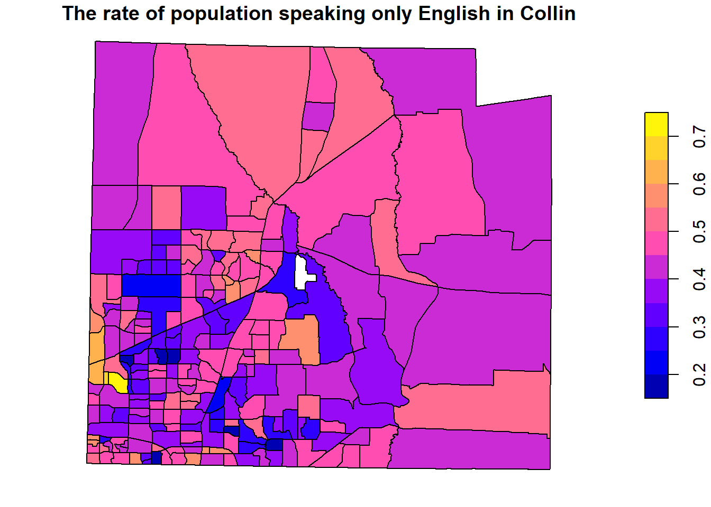

Geography: Texas, Collin County, Unit: Census tracts, Variables: Total population and Population speaking only English
To enable caching of data, set `options(tigris_use_cache = TRUE)`
in your R script or .Rprofile.
Linking to GEOS 3.13.1, GDAL 3.11.0, PROJ 9.6.0; sf_use_s2() is TRUE
Attaching package: 'dplyr'
The following objects are masked from 'package:stats':
filter, lag
The following objects are masked from 'package:base':
intersect, setdiff, setequal, union
Getting data from the 2019-2023 5-year ACS
2) Plot map
acs_bg_vars$popden<-acs_bg_vars$total_pop/acs_bg_vars$ALANDacs_bg_vars$rate_eng<-acs_bg_vars$SpkEng/acs_bg_vars$total_popplot(acs_bg_vars["popden"],main="Population Density (persons/sq.m) in Collin CO, TX")
plot(acs_bg_vars["rate_eng"],main="The rate of population speaking only English in Collin")

3) Show Table
knitr::kable(st_drop_geometry(acs_bg_vars[c(1:10,(nrow(acs_bg_vars)-10):nrow(acs_bg_vars)),]),digits=4, caption ="Statistics of Collin CO, TX")
Statistics of Collin CO, TX
GEOID
NAME
total_pop
B01001_001M
SpkEng
B16004_025M
ALAND
popden
rate_eng
1
48085031643
Census Tract 316.43; Collin County; Texas
4423
585
1882
337
2155712
0.0021
0.4255
2
48085032008
Census Tract 320.08; Collin County; Texas
4278
492
1683
275
4209951
0.0010
0.3934
3
48085032012
Census Tract 320.12; Collin County; Texas
3492
467
978
289
1626809
0.0021
0.2801
4
48085031708
Census Tract 317.08; Collin County; Texas
3908
482
1787
265
2354378
0.0017
0.4573
5
48085031659
Census Tract 316.59; Collin County; Texas
2570
426
720
334
1001155
0.0026
0.2802
6
48085030509
Census Tract 305.09; Collin County; Texas
2895
476
1197
314
1055349
0.0027
0.4135
7
48085031639
Census Tract 316.39; Collin County; Texas
7486
838
2453
794
2827677
0.0026
0.3277
8
48085031717
Census Tract 317.17; Collin County; Texas
2148
345
928
287
470047
0.0046
0.4320
9
48085030529
Census Tract 305.29; Collin County; Texas
3419
377
1697
281
1701192
0.0020
0.4963
10
48085030546
Census Tract 305.46; Collin County; Texas
5669
763
2701
459
3435759
0.0016
0.4765
210
48085030507
Census Tract 305.07; Collin County; Texas
1806
389
808
109
1587250
0.0011
0.4474
211
48085031416
Census Tract 314.16; Collin County; Texas
10446
1008
3712
623
7516784
0.0014
0.3554
212
48085030702
Census Tract 307.02; Collin County; Texas
5445
947
2370
440
3342941
0.0016
0.4353
213
48085031632
Census Tract 316.32; Collin County; Texas
5606
810
2569
577
3663988
0.0015
0.4583
214
48085030524
Census Tract 305.24; Collin County; Texas
9542
785
3078
469
5384362
0.0018
0.3226
215
48085031101
Census Tract 311.01; Collin County; Texas
5639
656
2349
687
75879749
0.0001
0.4166
216
48085031903
Census Tract 319.03; Collin County; Texas
1507
279
874
205
1507158
0.0010
0.5800
217
48085031670
Census Tract 316.70; Collin County; Texas
1557
393
985
257
3998070
0.0004
0.6326
218
48085030536
Census Tract 305.36; Collin County; Texas
6714
525
2027
320
2687242
0.0025
0.3019
219
48085031669
Census Tract 316.69; Collin County; Texas
2257
200
964
152
1560515
0.0014
0.4271
220
48085030535
Census Tract 305.35; Collin County; Texas
2836
430
982
230
1381340
0.0021
0.3463
4) Interpretation
Population density shows higher values within the City of Plano administrative boundary, while its surrounding census tracts have lower values. Specifically, it shows that the 25th percentile population density is 0.00092 and the 75th percentile density is 0.00214.
However, the spatial patterns of the rate of population speaking only English show an opposite pattern to population density. The peripheral census tracts of Plano show a high rate of numbers speaking only English. Specifically, 25th percentile is 0.373 and 75th percentile is 0.484.